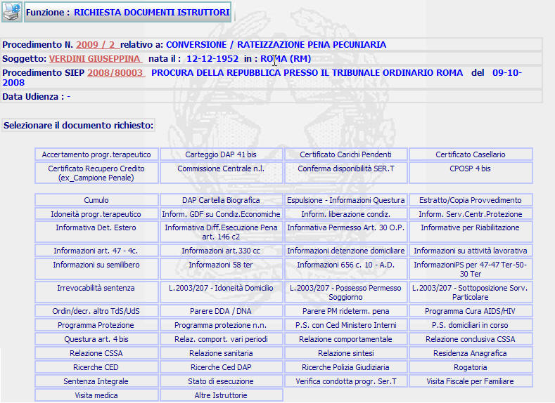
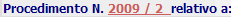
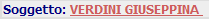
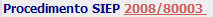

RICHIESTA DOCUMENTI ISTRUTTORI: La funzione consente di visualizzare l'elenco degli atti istruttori che il sistema consente di produrre.
LE MASCHERE VIDEO
La funzione viene realizzata attraverso la maschera seguente in cui compaiono gli estremi del procedimento Sius, il nome del soggetto, gli estremi del procedimento Siep e l'eventuale data di udienza, nonchè l'elenco dei bottoni contenenti la descrizione degli atti istruttori che il sistema consente di produrre.
N.B. Alcuni documenti è possibile richiederli solo dagli Uffici di Sorveglianza (ad esempio quelli relativi alla L.2003/7).

COME FARE PER ...
| Per visualizzare il dettaglio del procedimento Sius l'utente deve cliccare sul link relativo all'Anno/Numero del procedimento Sius evidenziato in rosso; |

| Per visualizzare il dettaglio del soggetto l'utente deve cliccare sul link relativo al cognome/nome del soggetto evidenziato in rosso; |

| Per visualizzare il dettaglio del procedimento Siep l'utente deve cliccare sul link relativo all' Anno/Numero del procedimento Siep evidenziato in rosso; |

| Per selezionare il documento istruttorio che si intende produrre e stampare l'utente deve selezionare il bottone che contiene la descrizione dell'atto interessato |
PULSANTI
Sono presenti i seguenti pulsanti facenti parte del gruppo di pulsanti di "Uso Comune:
|
PULSANTE |
DESCRIZIONE |
|
|
Questo pulsante ha lo
scopo di stampare il contesto (videata) |
BOTTONI
Oltre ai comandi funzionali relativi al menù verticale sono presenti i bottoni contenenti la descrizione degli atti istruttori che il sistema consente di produrre